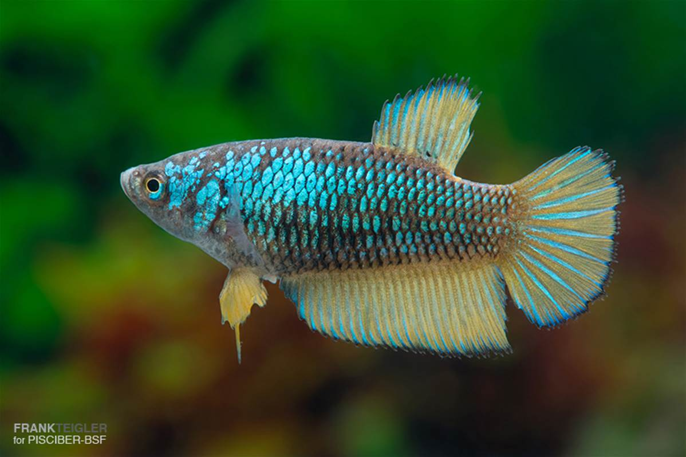
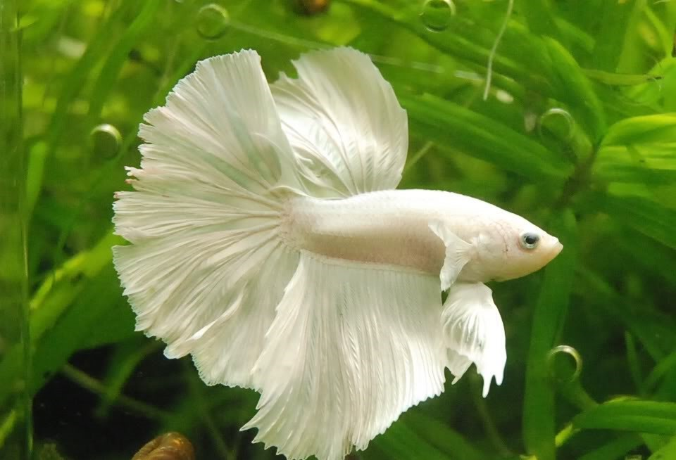
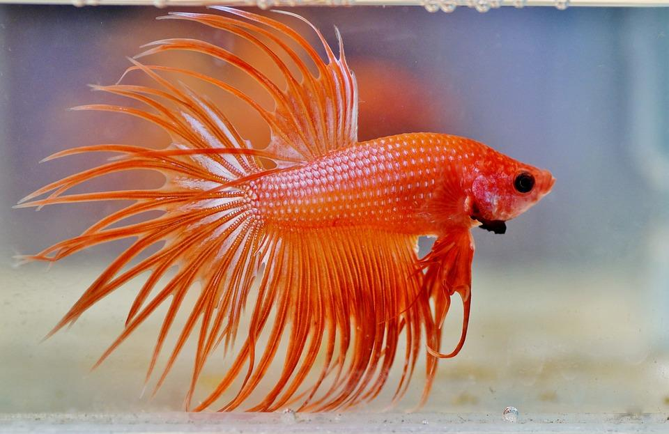

Somos una pagina dedicada al cuidado responsable de la popular mascota el pez betta, y esperamos que tu
experiencia aprendiendo a criar este tipo de pez, te ayude a poder mantener este ejemplar en tu acuario.



A continuacion se le brindaran una serie de consejos e indicaciones sobre como mantener a tu pez, recuerde siempre que cada animal es distinto y puede que unos coman mas que otros, o que algunos puedan convivir con mas peces sin causar inconvenientes, por ende recordamos que esto es un compilado de informacion general sacado de la experiencia y el hobby dedicado durante los años.